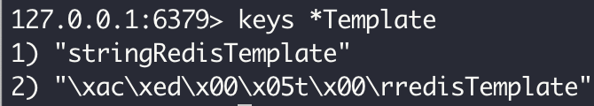
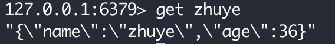
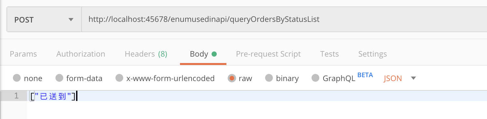
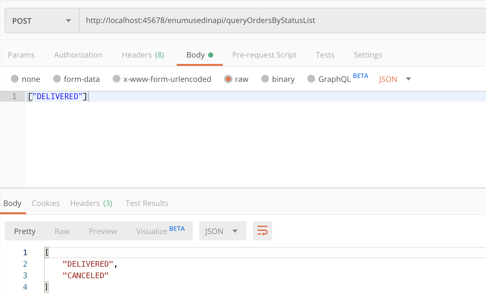
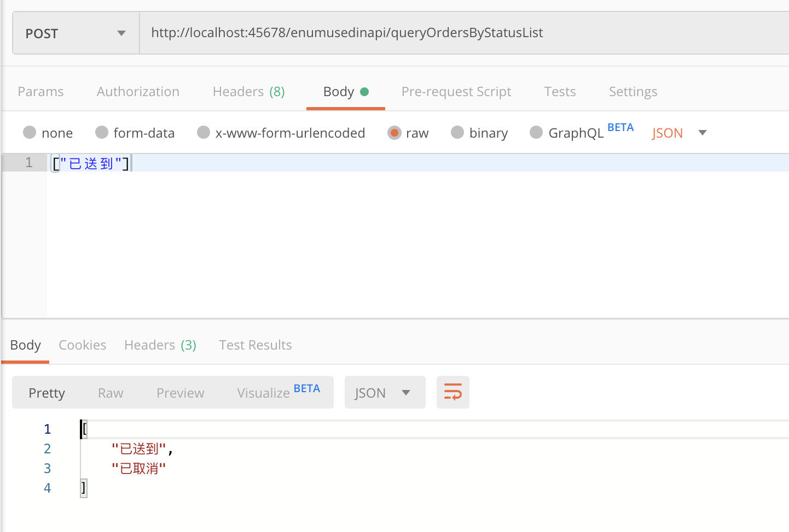
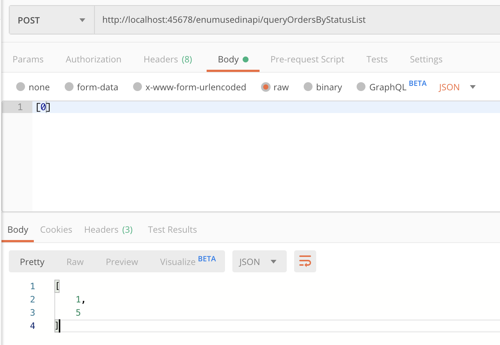

- 00 开篇词 业务代码真的会有这么多坑？.md.html
- 01 使用了并发工具类库，线程安全就高枕无忧了吗？.md.html
- 02 代码加锁：不要让“锁”事成为烦心事.md.html
- 03 线程池：业务代码最常用也最容易犯错的组件.md.html
- 04 连接池：别让连接池帮了倒忙.md.html
- 05 HTTP调用：你考虑到超时、重试、并发了吗？.md.html
- 06 2成的业务代码的Spring声明式事务，可能都没处理正确.md.html
- 07 数据库索引：索引并不是万能药.md.html
- 08 判等问题：程序里如何确定你就是你？.md.html
- 09 数值计算：注意精度、舍入和溢出问题.md.html
- 10 集合类：坑满地的List列表操作.md.html
- 11 空值处理：分不清楚的null和恼人的空指针.md.html
- 12 异常处理：别让自己在出问题的时候变为瞎子.md.html
- 13 日志：日志记录真没你想象的那么简单.md.html
- 14 文件IO：实现高效正确的文件读写并非易事.md.html
- 15 序列化：一来一回你还是原来的你吗？.md.html
- 16 用好Java 8的日期时间类，少踩一些“老三样”的坑.md.html
- 17 别以为“自动挡”就不可能出现OOM.md.html
- 18 当反射、注解和泛型遇到OOP时，会有哪些坑？.md.html
- 19 Spring框架：IoC和AOP是扩展的核心.md.html
- 20 Spring框架：框架帮我们做了很多工作也带来了复杂度.md.html
- 21 代码重复：搞定代码重复的三个绝招.md.html
- 22 接口设计：系统间对话的语言，一定要统一.md.html
- 23 缓存设计：缓存可以锦上添花也可以落井下石.md.html
- 24 业务代码写完，就意味着生产就绪了？.md.html
- 25 异步处理好用，但非常容易用错.md.html
- 26 数据存储：NoSQL与RDBMS如何取长补短、相辅相成？.md.html
- 27 数据源头：任何客户端的东西都不可信任.md.html
- 28 安全兜底：涉及钱时，必须考虑防刷、限量和防重.md.html
- 29 数据和代码：数据就是数据，代码就是代码.md.html
- 30 如何正确保存和传输敏感数据？.md.html
- 31 加餐1：带你吃透课程中Java 8的那些重要知识点（一）.md.html
- 32 加餐2：带你吃透课程中Java 8的那些重要知识点（二）.md.html
- 33 加餐3：定位应用问题，排错套路很重要.md.html
- 34 加餐4：分析定位Java问题，一定要用好这些工具（一）.md.html
- 35 加餐5：分析定位Java问题，一定要用好这些工具（二）.md.html
- 36 加餐6：这15年来，我是如何在工作中学习技术和英语的？.md.html
- 37 加餐7：程序员成长28计.md.html
- 38 加餐8：Java程序从虚拟机迁移到Kubernetes的一些坑.md.html
- 答疑篇：代码篇思考题集锦（一）.md.html
- 答疑篇：代码篇思考题集锦（三）.md.html
- 答疑篇：代码篇思考题集锦（二）.md.html
- 答疑篇：加餐篇思考题答案合集.md.html
- 答疑篇：安全篇思考题答案合集.md.html
- 答疑篇：设计篇思考题答案合集.md.html
- 结束语 写代码时，如何才能尽量避免踩坑？.md.html
15 序列化：一来一回你还是原来的你吗？
你好，我是朱晔。今天，我来和你聊聊序列化相关的坑和最佳实践。
序列化是把对象转换为字节流的过程，以方便传输或存储。反序列化，则是反过来把字节流转换为对象的过程。在介绍文件 IO的时候，我提到字符编码是把字符转换为二进制的过程，至于怎么转换需要由字符集制定规则。同样地，对象的序列化和反序列化，也需要由序列化算法制定规则。
关于序列化算法，几年前常用的有 JDK（Java）序列化、XML 序列化等，但前者不能跨语言，后者性能较差（时间空间开销大）；现在 RESTful 应用最常用的是 JSON 序列化，追求性能的 RPC 框架（比如 gRPC）使用 protobuf 序列化，这 2 种方法都是跨语言的，而且性能不错，应用广泛。
在架构设计阶段，我们可能会重点关注算法选型，在性能、易用性和跨平台性等中权衡，不过这里的坑比较少。通常情况下，序列化问题常见的坑会集中在业务场景中，比如 Redis、参数和响应序列化反序列化。
今天，我们就一起聊聊开发中序列化常见的一些坑吧。
序列化和反序列化需要确保算法一致
业务代码中涉及序列化时，很重要的一点是要确保序列化和反序列化的算法一致性。有一次我要排查缓存命中率问题，需要运维同学帮忙拉取 Redis 中的 Key，结果他反馈 Redis 中存的都是乱码，怀疑 Redis 被攻击了。其实呢，这个问题就是序列化算法导致的，我们来看下吧。
在这个案例中，开发同学使用 RedisTemplate 来操作 Redis 进行数据缓存。因为相比于 Jedis，使用 Spring 提供的 RedisTemplate 操作 Redis，除了无需考虑连接池、更方便外，还可以与 Spring Cache 等其他组件无缝整合。如果使用 Spring Boot 的话，无需任何配置就可以直接使用。
数据（包含 Key 和 Value）要保存到 Redis，需要经过序列化算法来序列化成字符串。虽然 Redis 支持多种数据结构，比如 Hash，但其每一个 field 的 Value 还是字符串。如果 Value 本身也是字符串的话，能否有便捷的方式来使用 RedisTemplate，而无需考虑序列化呢？
其实是有的，那就是 StringRedisTemplate。
那 StringRedisTemplate 和 RedisTemplate 的区别是什么呢？开头提到的乱码又是怎么回事呢？带着这些问题让我们来研究一下吧。
写一段测试代码，在应用初始化完成后向 Redis 设置两组数据，第一次使用 RedisTemplate 设置 Key 为 redisTemplate、Value 为 User 对象，第二次使用 StringRedisTemplate 设置 Key 为 stringRedisTemplate、Value 为 JSON 序列化后的 User 对象：
@Autowired
private RedisTemplate redisTemplate;
@Autowired
private StringRedisTemplate stringRedisTemplate;
@Autowired
private ObjectMapper objectMapper;
@PostConstruct
public void init() throws JsonProcessingException {
redisTemplate.opsForValue().set("redisTemplate", new User("zhuye", 36));
stringRedisTemplate.opsForValue().set("stringRedisTemplate", objectMapper.writeValueAsString(new User("zhuye", 36)));
}
如果你认为，StringRedisTemplate 和 RedisTemplate 的区别，无非是读取的 Value 是 String 和 Object，那就大错特错了，因为使用这两种方式存取的数据完全无法通用。
我们做个小实验，通过 RedisTemplate 读取 Key 为 stringRedisTemplate 的 Value，使用 StringRedisTemplate 读取 Key 为 redisTemplate 的 Value：
log.info("redisTemplate get {}", redisTemplate.opsForValue().get("stringRedisTemplate"));
log.info("stringRedisTemplate get {}", stringRedisTemplate.opsForValue().get("redisTemplate"));
结果是，两次都无法读取到 Value：
[11:49:38.478] [http-nio-45678-exec-1] [INFO ] [.t.c.s.demo1.RedisTemplateController:38 ] - redisTemplate get null
[11:49:38.481] [http-nio-45678-exec-1] [INFO ] [.t.c.s.demo1.RedisTemplateController:39 ] - stringRedisTemplate get null
通过 redis-cli 客户端工具连接到 Redis，你会发现根本就没有叫作 redisTemplate 的 Key，所以 StringRedisTemplate 无法查到数据：

查看 RedisTemplate 的源码发现，默认情况下 RedisTemplate 针对 Key 和 Value 使用了 JDK 序列化：
public void afterPropertiesSet() {
...
if (defaultSerializer == null) {
defaultSerializer = new JdkSerializationRedisSerializer(
classLoader != null ? classLoader : this.getClass().getClassLoader());
}
if (enableDefaultSerializer) {
if (keySerializer == null) {
keySerializer = defaultSerializer;
defaultUsed = true;
}
if (valueSerializer == null) {
valueSerializer = defaultSerializer;
defaultUsed = true;
}
if (hashKeySerializer == null) {
hashKeySerializer = defaultSerializer;
defaultUsed = true;
}
if (hashValueSerializer == null) {
hashValueSerializer = defaultSerializer;
defaultUsed = true;
}
}
...
}
redis-cli 看到的类似一串乱码的"\xac\xed\x00\x05t\x00\rredisTemplate"字符串，其实就是字符串 redisTemplate 经过 JDK 序列化后的结果。这就回答了之前提到的乱码问题。而 RedisTemplate 尝试读取 Key 为 stringRedisTemplate 数据时，也会对这个字符串进行 JDK 序列化处理，所以同样无法读取到数据。
而 StringRedisTemplate 对于 Key 和 Value，使用的是 String 序列化方式，Key 和 Value 只能是 String：
public class StringRedisTemplate extends RedisTemplate<String, String> {
public StringRedisTemplate() {
setKeySerializer(RedisSerializer.string());
setValueSerializer(RedisSerializer.string());
setHashKeySerializer(RedisSerializer.string());
setHashValueSerializer(RedisSerializer.string());
}
}
public class StringRedisSerializer implements RedisSerializer<String> {
@Override
public String deserialize(@Nullable byte[] bytes) {
return (bytes == null ? null : new String(bytes, charset));
}
@Override
public byte[] serialize(@Nullable String string) {
return (string == null ? null : string.getBytes(charset));
}
}
看到这里，我们应该知道 RedisTemplate 和 StringRedisTemplate 保存的数据无法通用。修复方式就是，让它们读取自己存的数据：
使用 RedisTemplate 读出的数据，由于是 Object 类型的，使用时可以先强制转换为 User 类型；
使用 StringRedisTemplate 读取出的字符串，需要手动将 JSON 反序列化为 User 类型。
//使用RedisTemplate获取Value，无需反序列化就可以拿到实际对象，虽然方便，但是Redis中保存的Key和Value不易读
User userFromRedisTemplate = (User) redisTemplate.opsForValue().get("redisTemplate");
log.info("redisTemplate get {}", userFromRedisTemplate);
//使用StringRedisTemplate，虽然Key正常，但是Value存取需要手动序列化成字符串
User userFromStringRedisTemplate = objectMapper.readValue(stringRedisTemplate.opsForValue().get("stringRedisTemplate"), User.class);
log.info("stringRedisTemplate get {}", userFromStringRedisTemplate);
这样就可以得到正确输出：
[13:32:09.087] [http-nio-45678-exec-6] [INFO ] [.t.c.s.demo1.RedisTemplateController:45 ] - redisTemplate get User(name=zhuye, age=36)
[13:32:09.092] [http-nio-45678-exec-6] [INFO ] [.t.c.s.demo1.RedisTemplateController:47 ] - stringRedisTemplate get User(name=zhuye, age=36)
看到这里你可能会说，使用 RedisTemplate 获取 Value 虽然方便，但是 Key 和 Value 不易读；而使用 StringRedisTemplate 虽然 Key 是普通字符串，但是 Value 存取需要手动序列化成字符串，有没有两全其美的方式呢？
当然有，自己定义 RedisTemplate 的 Key 和 Value 的序列化方式即可：Key 的序列化使用 RedisSerializer.string()（也就是 StringRedisSerializer 方式）实现字符串序列化，而 Value 的序列化使用 Jackson2JsonRedisSerializer：
@Bean
public <T> RedisTemplate<String, T> redisTemplate(RedisConnectionFactory redisConnectionFactory) {
RedisTemplate<String, T> redisTemplate = new RedisTemplate<>();
redisTemplate.setConnectionFactory(redisConnectionFactory);
Jackson2JsonRedisSerializer jackson2JsonRedisSerializer = new Jackson2JsonRedisSerializer(Object.class);
redisTemplate.setKeySerializer(RedisSerializer.string());
redisTemplate.setValueSerializer(jackson2JsonRedisSerializer);
redisTemplate.setHashKeySerializer(RedisSerializer.string());
redisTemplate.setHashValueSerializer(jackson2JsonRedisSerializer);
redisTemplate.afterPropertiesSet();
return redisTemplate;
}
写代码测试一下存取，直接注入类型为 RedisTemplate<String, User> 的 userRedisTemplate 字段，然后在 right2 方法中，使用注入的 userRedisTemplate 存入一个 User 对象，再分别使用 userRedisTemplate 和 StringRedisTemplate 取出这个对象：
@Autowired
private RedisTemplate<String, User> userRedisTemplate;
@GetMapping("right2")
public void right2() {
User user = new User("zhuye", 36);
userRedisTemplate.opsForValue().set(user.getName(), user);
Object userFromRedis = userRedisTemplate.opsForValue().get(user.getName());
log.info("userRedisTemplate get {} {}", userFromRedis, userFromRedis.getClass());
log.info("stringRedisTemplate get {}", stringRedisTemplate.opsForValue().get(user.getName()));
}
乍一看没啥问题，StringRedisTemplate 成功查出了我们存入的数据：
[14:07:41.315] [http-nio-45678-exec-1] [INFO ] [.t.c.s.demo1.RedisTemplateController:55 ] - userRedisTemplate get {name=zhuye, age=36} class java.util.LinkedHashMap
[14:07:41.318] [http-nio-45678-exec-1] [INFO ] [.t.c.s.demo1.RedisTemplateController:56 ] - stringRedisTemplate get {"name":"zhuye","age":36}
Redis 里也可以查到 Key 是纯字符串，Value 是 JSON 序列化后的 User 对象：

但值得注意的是，这里有一个坑。第一行的日志输出显示，userRedisTemplate 获取到的 Value，是 LinkedHashMap 类型的，完全不是泛型的 RedisTemplate 设置的 User 类型。
如果我们把代码里从 Redis 中获取到的 Value 变量类型由 Object 改为 User，编译不会出现问题，但会出现 ClassCastException：
java.lang.ClassCastException: java.util.LinkedHashMap cannot be cast to org.geekbang.time.commonmistakes.serialization.demo1.User
修复方式是，修改自定义 RestTemplate 的代码，把 new 出来的 Jackson2JsonRedisSerializer 设置一个自定义的 ObjectMapper，启用 activateDefaultTyping 方法把类型信息作为属性写入序列化后的数据中（当然了，你也可以调整 JsonTypeInfo.As 枚举以其他形式保存类型信息）：
...
Jackson2JsonRedisSerializer jackson2JsonRedisSerializer = new Jackson2JsonRedisSerializer(Object.class);
ObjectMapper objectMapper = new ObjectMapper();
//把类型信息作为属性写入Value
objectMapper.activateDefaultTyping(objectMapper.getPolymorphicTypeValidator(), ObjectMapper.DefaultTyping.NON_FINAL, JsonTypeInfo.As.PROPERTY);
jackson2JsonRedisSerializer.setObjectMapper(objectMapper);
...
或者，直接使用 RedisSerializer.json() 快捷方法，它内部使用的 GenericJackson2JsonRedisSerializer 直接设置了把类型作为属性保存到 Value 中：
redisTemplate.setKeySerializer(RedisSerializer.string());
redisTemplate.setValueSerializer(RedisSerializer.json());
redisTemplate.setHashKeySerializer(RedisSerializer.string());
redisTemplate.setHashValueSerializer(RedisSerializer.json());
重启程序调用 right2 方法进行测试，可以看到，从自定义的 RedisTemplate 中获取到的 Value 是 User 类型的（第一行日志），而且 Redis 中实际保存的 Value 包含了类型完全限定名（第二行日志）：
[15:10:50.396] [http-nio-45678-exec-1] [INFO ] [.t.c.s.demo1.RedisTemplateController:55 ] - userRedisTemplate get User(name=zhuye, age=36) class org.geekbang.time.commonmistakes.serialization.demo1.User
[15:10:50.399] [http-nio-45678-exec-1] [INFO ] [.t.c.s.demo1.RedisTemplateController:56 ] - stringRedisTemplate get ["org.geekbang.time.commonmistakes.serialization.demo1.User",{"name":"zhuye","age":36}]
因此，反序列化时可以直接得到 User 类型的 Value。
通过对 RedisTemplate 组件的分析，可以看到，当数据需要序列化后保存时，读写数据使用一致的序列化算法的必要性，否则就像对牛弹琴。
这里，我再总结下 Spring 提供的 4 种 RedisSerializer（Redis 序列化器）：
默认情况下，RedisTemplate 使用 JdkSerializationRedisSerializer，也就是 JDK 序列化，容易产生 Redis 中保存了乱码的错觉。
通常考虑到易读性，可以设置 Key 的序列化器为 StringRedisSerializer。但直接使用 RedisSerializer.string()，相当于使用了 UTF_8 编码的 StringRedisSerializer，需要注意字符集问题。
如果希望 Value 也是使用 JSON 序列化的话，可以把 Value 序列化器设置为 Jackson2JsonRedisSerializer。默认情况下，不会把类型信息保存在 Value 中，即使我们定义 RedisTemplate 的 Value 泛型为实际类型，查询出的 Value 也只能是 LinkedHashMap 类型。如果希望直接获取真实的数据类型，你可以启用 Jackson ObjectMapper 的 activateDefaultTyping 方法，把类型信息一起序列化保存在 Value 中。
如果希望 Value 以 JSON 保存并带上类型信息，更简单的方式是，直接使用 RedisSerializer.json() 快捷方法来获取序列化器。
注意 Jackson JSON 反序列化对额外字段的处理
前面我提到，通过设置 JSON 序列化工具 Jackson 的 activateDefaultTyping 方法，可以在序列化数据时写入对象类型。其实，Jackson 还有很多参数可以控制序列化和反序列化，是一个功能强大而完善的序列化工具。因此，很多框架都将 Jackson 作为 JDK 序列化工具，比如 Spring Web。但也正是这个原因，我们使用时要小心各个参数的配置。
比如，在开发 Spring Web 应用程序时，如果自定义了 ObjectMapper，并把它注册成了 Bean，那很可能会导致 Spring Web 使用的 ObjectMapper 也被替换，导致 Bug。
我们来看一个案例。程序一开始是正常的，某一天开发同学希望修改一下 ObjectMapper 的行为，让枚举序列化为索引值而不是字符串值，比如默认情况下序列化一个 Color 枚举中的 Color.BLUE 会得到字符串 BLUE：
@Autowired
private ObjectMapper objectMapper;
@GetMapping("test")
public void test() throws JsonProcessingException {
log.info("color:{}", objectMapper.writeValueAsString(Color.BLUE));
}
enum Color {
RED, BLUE
}
于是，这位同学就重新定义了一个 ObjectMapper Bean，开启了 WRITE_ENUMS_USING_INDEX 功能特性：
@Bean
public ObjectMapper objectMapper(){
ObjectMapper objectMapper=new ObjectMapper();
objectMapper.configure(SerializationFeature.WRITE_ENUMS_USING_INDEX,true);
return objectMapper;
}
开启这个特性后，Color.BLUE 枚举序列化成索引值 1：
[16:11:37.382] [http-nio-45678-exec-1] [INFO ] [c.s.d.JsonIgnorePropertiesController:19 ] - color:1
修改后处理枚举序列化的逻辑是满足了要求，但线上爆出了大量 400 错误，日志中也出现了很多 UnrecognizedPropertyException：
JSON parse error: Unrecognized field \"ver\" (class org.geekbang.time.commonmistakes.serialization.demo4.UserWrong), not marked as ignorable; nested exception is com.fasterxml.jackson.databind.exc.UnrecognizedPropertyException: Unrecognized field \"version\" (class org.geekbang.time.commonmistakes.serialization.demo4.UserWrong), not marked as ignorable (one known property: \"name\"])\n at [Source: (PushbackInputStream); line: 1, column: 22] (through reference chain: org.geekbang.time.commonmistakes.serialization.demo4.UserWrong[\"ver\"])
从异常信息中可以看到，这是因为反序列化的时候，原始数据多了一个 version 属性。进一步分析发现，我们使用了 UserWrong 类型作为 Web 控制器 wrong 方法的入参，其中只有一个 name 属性：
@Data
public class UserWrong {
private String name;
}
@PostMapping("wrong")
public UserWrong wrong(@RequestBody UserWrong user) {
return user;
}
而客户端实际传过来的数据多了一个 version 属性。那，为什么之前没这个问题呢？
问题就出在，自定义 ObjectMapper 启用 WRITE_ENUMS_USING_INDEX 序列化功能特性时，覆盖了 Spring Boot 自动创建的 ObjectMapper；而这个自动创建的 ObjectMapper 设置过 FAIL_ON_UNKNOWN_PROPERTIES 反序列化特性为 false，以确保出现未知字段时不要抛出异常。源码如下：
public MappingJackson2HttpMessageConverter() {
this(Jackson2ObjectMapperBuilder.json().build());
}
public class Jackson2ObjectMapperBuilder {
...
private void customizeDefaultFeatures(ObjectMapper objectMapper) {
if (!this.features.containsKey(MapperFeature.DEFAULT_VIEW_INCLUSION)) {
configureFeature(objectMapper, MapperFeature.DEFAULT_VIEW_INCLUSION, false);
}
if (!this.features.containsKey(DeserializationFeature.FAIL_ON_UNKNOWN_PROPERTIES)) {
configureFeature(objectMapper, DeserializationFeature.FAIL_ON_UNKNOWN_PROPERTIES, false);
}
}
}
要修复这个问题，有三种方式：
第一种，同样禁用自定义的 ObjectMapper 的 FAIL_ON_UNKNOWN_PROPERTIES：
@Bean
public ObjectMapper objectMapper(){
ObjectMapper objectMapper=new ObjectMapper();
objectMapper.configure(SerializationFeature.WRITE_ENUMS_USING_INDEX,true);
objectMapper.configure(DeserializationFeature.FAIL_ON_UNKNOWN_PROPERTIES,false);
return objectMapper;
}
第二种，设置自定义类型，加上 @JsonIgnoreProperties 注解，开启 ignoreUnknown 属性，以实现反序列化时忽略额外的数据：
@Data
@JsonIgnoreProperties(ignoreUnknown = true)
public class UserRight {
private String name;
}
第三种，不要自定义 ObjectMapper，而是直接在配置文件设置相关参数，来修改 Spring 默认的 ObjectMapper 的功能。比如，直接在配置文件启用把枚举序列化为索引号：
spring.jackson.serialization.write_enums_using_index=true
或者可以直接定义 Jackson2ObjectMapperBuilderCustomizer Bean 来启用新特性：
@Bean
public Jackson2ObjectMapperBuilderCustomizer customizer(){
return builder -> builder.featuresToEnable(SerializationFeature.WRITE_ENUMS_USING_INDEX);
}
这个案例告诉我们两点：
Jackson 针对序列化和反序列化有大量的细节功能特性，我们可以参考 Jackson 官方文档来了解这些特性，详见SerializationFeature、DeserializationFeature和MapperFeature。
忽略多余字段，是我们写业务代码时最容易遇到的一个配置项。Spring Boot 在自动配置时贴心地做了全局设置。如果需要设置更多的特性，可以直接修改配置文件 spring.jackson.** 或设置 Jackson2ObjectMapperBuilderCustomizer 回调接口，来启用更多设置，无需重新定义 ObjectMapper Bean。
反序列化时要小心类的构造方法
使用 Jackson 反序列化时，除了要注意忽略额外字段的问题外，还要小心类的构造方法。我们看一个实际的踩坑案例吧。
有一个 APIResult 类包装了 REST 接口的返回体（作为 Web 控制器的出参），其中 boolean 类型的 success 字段代表是否处理成功、int 类型的 code 字段代表处理状态码。
开始时，在返回 APIResult 的时候每次都根据 code 来设置 success。如果 code 是 2000，那么 success 是 true，否则是 false。后来为了减少重复代码，把这个逻辑放到了 APIResult 类的构造方法中处理：
@Data
public class APIResultWrong {
private boolean success;
private int code;
public APIResultWrong() {
}
public APIResultWrong(int code) {
this.code = code;
if (code == 2000) success = true;
else success = false;
}
}
经过改动后发现，即使 code 为 2000，返回 APIResult 的 success 也是 false。比如，我们反序列化两次 APIResult，一次使用 code==1234，一次使用 code==2000：
@Autowired
ObjectMapper objectMapper;
@GetMapping("wrong")
public void wrong() throws JsonProcessingException {
log.info("result :{}", objectMapper.readValue("{\"code\":1234}", APIResultWrong.class));
log.info("result :{}", objectMapper.readValue("{\"code\":2000}", APIResultWrong.class));
}
日志输出如下：
[17:36:14.591] [http-nio-45678-exec-1] [INFO ] [DeserializationConstructorController:20 ] - result :APIResultWrong(success=false, code=1234)
[17:36:14.591] [http-nio-45678-exec-1] [INFO ] [DeserializationConstructorController:21 ] - result :APIResultWrong(success=false, code=2000)
可以看到，两次的 APIResult 的 success 字段都是 false。
出现这个问题的原因是，默认情况下，在反序列化的时候，Jackson 框架只会调用无参构造方法创建对象。如果走自定义的构造方法创建对象，需要通过 @JsonCreator 来指定构造方法，并通过 @JsonProperty 设置构造方法中参数对应的 JSON 属性名：
@Data
public class APIResultRight {
...
@JsonCreator
public APIResultRight(@JsonProperty("code") int code) {
this.code = code;
if (code == 2000) success = true;
else success = false;
}
}
重新运行程序，可以得到正确输出：
[17:41:23.188] [http-nio-45678-exec-1] [INFO ] [DeserializationConstructorController:26 ] - result :APIResultRight(success=false, code=1234)
[17:41:23.188] [http-nio-45678-exec-1] [INFO ] [DeserializationConstructorController:27 ] - result :APIResultRight(success=true, code=2000)
可以看到，这次传入 code==2000 时，success 可以设置为 true。
枚举作为 API 接口参数或返回值的两个大坑
在前面的例子中，我演示了如何把枚举序列化为索引值。但对于枚举，我建议尽量在程序内部使用，而不是作为 API 接口的参数或返回值，原因是枚举涉及序列化和反序列化时会有两个大坑。
第一个坑是，客户端和服务端的枚举定义不一致时，会出异常。比如，客户端版本的枚举定义了 4 个枚举值：
@Getter
enum StatusEnumClient {
CREATED(1, "已创建"),
PAID(2, "已支付"),
DELIVERED(3, "已送到"),
FINISHED(4, "已完成");
private final int status;
private final String desc;
StatusEnumClient(Integer status, String desc) {
this.status = status;
this.desc = desc;
}
}
服务端定义了 5 个枚举值：
@Getter
enum StatusEnumServer {
...
CANCELED(5, "已取消");
private final int status;
private final String desc;
StatusEnumServer(Integer status, String desc) {
this.status = status;
this.desc = desc;
}
}
写代码测试一下，使用 RestTemplate 来发起请求，让服务端返回客户端不存在的枚举值：
@GetMapping("getOrderStatusClient")
public void getOrderStatusClient() {
StatusEnumClient result = restTemplate.getForObject("http://localhost:45678/enumusedinapi/getOrderStatus", StatusEnumClient.class);
log.info("result {}", result);
}
@GetMapping("getOrderStatus")
public StatusEnumServer getOrderStatus() {
return StatusEnumServer.CANCELED;
}
访问接口会出现如下异常信息，提示在枚举 StatusEnumClient 中找不到 CANCELED：
JSON parse error: Cannot deserialize value of type `org.geekbang.time.commonmistakes.enums.enumusedinapi.StatusEnumClient` from String "CANCELED": not one of the values accepted for Enum class: [CREATED, FINISHED, DELIVERED, PAID];
要解决这个问题，可以开启 Jackson 的 read_unknown_enum_values_using_default_value 反序列化特性，也就是在枚举值未知的时候使用默认值：
spring.jackson.deserialization.read_unknown_enum_values_using_default_value=true
并为枚举添加一个默认值，使用 @JsonEnumDefaultValue 注解注释：
@JsonEnumDefaultValue
UNKNOWN(-1, "未知");
需要注意的是，这个枚举值一定是添加在客户端 StatusEnumClient 中的，因为反序列化使用的是客户端枚举。
这里还有一个小坑是，仅仅这样配置还不能让 RestTemplate 生效这个反序列化特性，还需要配置 RestTemplate，来使用 Spring Boot 的 MappingJackson2HttpMessageConverter 才行：
@Bean
public RestTemplate restTemplate(MappingJackson2HttpMessageConverter mappingJackson2HttpMessageConverter) {
return new RestTemplateBuilder()
.additionalMessageConverters(mappingJackson2HttpMessageConverter)
.build();
}
现在，请求接口可以返回默认值了：
[21:49:03.887] [http-nio-45678-exec-1] [INFO ] [o.g.t.c.e.e.EnumUsedInAPIController:25 ] - result UNKNOWN
第二个坑，也是更大的坑，枚举序列化反序列化实现自定义的字段非常麻烦，会涉及 Jackson 的 Bug。比如，下面这个接口，传入枚举 List，为 List 增加一个 CENCELED 枚举值然后返回：
@PostMapping("queryOrdersByStatusList")
public List<StatusEnumServer> queryOrdersByStatus(@RequestBody List<StatusEnumServer> enumServers) {
enumServers.add(StatusEnumServer.CANCELED);
return enumServers;
}
如果我们希望根据枚举的 Desc 字段来序列化，传入“已送到”作为入参：

会得到异常，提示“已送到”不是正确的枚举值：
JSON parse error: Cannot deserialize value of type `org.geekbang.time.commonmistakes.enums.enumusedinapi.StatusEnumServer` from String "已送到": not one of the values accepted for Enum class: [CREATED, CANCELED, FINISHED, DELIVERED, PAID]
显然，这里反序列化使用的是枚举的 name，序列化也是一样：

你可能也知道，要让枚举的序列化和反序列化走 desc 字段，可以在字段上加 @JsonValue 注解，修改 StatusEnumServer 和 StatusEnumClient：
@JsonValue
private final String desc;
然后再尝试下，果然可以用 desc 作为入参了，而且出参也使用了枚举的 desc：

但是，如果你认为这样就完美解决问题了，那就大错特错了。你可以再尝试把 @JsonValue 注解加在 int 类型的 status 字段上，也就是希望序列化反序列化走 status 字段：
@JsonValue
private final int status;
写一个客户端测试一下，传入 CREATED 和 PAID 两个枚举值：
@GetMapping("queryOrdersByStatusListClient")
public void queryOrdersByStatusListClient() {
List<StatusEnumClient> request = Arrays.asList(StatusEnumClient.CREATED, StatusEnumClient.PAID);
HttpEntity<List<StatusEnumClient>> entity = new HttpEntity<>(request, new HttpHeaders());
List<StatusEnumClient> response = restTemplate.exchange("http://localhost:45678/enumusedinapi/queryOrdersByStatusList",
HttpMethod.POST, entity, new ParameterizedTypeReference<List<StatusEnumClient>>() {}).getBody();
log.info("result {}", response);
}
请求接口可以看到，传入的是 CREATED 和 PAID，返回的居然是 DELIVERED 和 FINISHED。果然如标题所说，一来一回你已不是原来的你：
[22:03:03.579] [http-nio-45678-exec-4] [INFO ] [o.g.t.c.e.e.EnumUsedInAPIController:34 ] - result [DELIVERED, FINISHED, UNKNOWN]
出现这个问题的原因是，序列化走了 status 的值，而反序列化并没有根据 status 来，还是使用了枚举的 ordinal() 索引值。这是 Jackson至今（2.10）没有解决的 Bug，应该会在 2.11 解决。
如下图所示，我们调用服务端接口，传入一个不存在的 status 值 0，也能反序列化成功，最后服务端的返回是 1：

有一个解决办法是，设置 @JsonCreator 来强制反序列化时使用自定义的工厂方法，可以实现使用枚举的 status 字段来取值。我们把这段代码加在 StatusEnumServer 枚举类中：
@JsonCreator
public static StatusEnumServer parse(Object o) {
return Arrays.stream(StatusEnumServer.values()).filter(value->o.equals(value.status)).findFirst().orElse(null);
}
要特别注意的是，我们同样要为 StatusEnumClient 也添加相应的方法。因为除了服务端接口接收 StatusEnumServer 参数涉及一次反序列化外，从服务端返回值转换为 List 还会有一次反序列化：
@JsonCreator
public static StatusEnumClient parse(Object o) {
return Arrays.stream(StatusEnumClient.values()).filter(value->o.equals(value.status)).findFirst().orElse(null);
}
重新调用接口发现，虽然结果正确了，但是服务端不存在的枚举值 CANCELED 被设置为了 null，而不是 @JsonEnumDefaultValue 设置的 UNKNOWN。
这个问题，我们之前已经通过设置 @JsonEnumDefaultValue 注解解决了，但现在又出现了：
[22:20:13.727] [http-nio-45678-exec-1] [INFO ] [o.g.t.c.e.e.EnumUsedInAPIController:34 ] - result [CREATED, PAID, null]
原因也很简单，我们自定义的 parse 方法实现的是找不到枚举值时返回 null。
为彻底解决这个问题，并避免通过 @JsonCreator 在枚举中自定义一个非常复杂的工厂方法，我们可以实现一个自定义的反序列化器。这段代码比较复杂，我特意加了详细的注释：
class EnumDeserializer extends JsonDeserializer<Enum> implements
ContextualDeserializer {
private Class<Enum> targetClass;
public EnumDeserializer() {
}
public EnumDeserializer(Class<Enum> targetClass) {
this.targetClass = targetClass;
}
@Override
public Enum deserialize(JsonParser p, DeserializationContext ctxt) {
//找枚举中带有@JsonValue注解的字段，这是我们反序列化的基准字段
Optional<Field> valueFieldOpt = Arrays.asList(targetClass.getDeclaredFields()).stream()
.filter(m -> m.isAnnotationPresent(JsonValue.class))
.findFirst();
if (valueFieldOpt.isPresent()) {
Field valueField = valueFieldOpt.get();
if (!valueField.isAccessible()) {
valueField.setAccessible(true);
}
//遍历枚举项，查找字段的值等于反序列化的字符串的那个枚举项
return Arrays.stream(targetClass.getEnumConstants()).filter(e -> {
try {
return valueField.get(e).toString().equals(p.getValueAsString());
} catch (Exception ex) {
ex.printStackTrace();
}
return false;
}).findFirst().orElseGet(() -> Arrays.stream(targetClass.getEnumConstants()).filter(e -> {
//如果找不到，就需要寻找默认枚举值来替代，同样遍历所有枚举项，查找@JsonEnumDefaultValue注解标识的枚举项
try {
return targetClass.getField(e.name()).isAnnotationPresent(JsonEnumDefaultValue.class);
} catch (Exception ex) {
ex.printStackTrace();
}
return false;
}).findFirst().orElse(null));
}
return null;
}
@Override
public JsonDeserializer<?> createContextual(DeserializationContext ctxt,
BeanProperty property) throws JsonMappingException {
targetClass = (Class<Enum>) ctxt.getContextualType().getRawClass();
return new EnumDeserializer(targetClass);
}
}
然后，把这个自定义反序列化器注册到 Jackson 中：
@Bean
public Module enumModule() {
SimpleModule module = new SimpleModule();
module.addDeserializer(Enum.class, new EnumDeserializer());
return module;
}
第二个大坑终于被完美地解决了：
[22:32:28.327] [http-nio-45678-exec-1] [INFO ] [o.g.t.c.e.e.EnumUsedInAPIController:34 ] - result [CREATED, PAID, UNKNOWN]
这样做，虽然解决了序列化反序列化使用枚举中自定义字段的问题，也解决了找不到枚举值时使用默认值的问题，但解决方案很复杂。因此，我还是建议在 DTO 中直接使用 int 或 String 等简单的数据类型，而不是使用枚举再配合各种复杂的序列化配置，来实现枚举到枚举中字段的映射，会更加清晰明了。
重点回顾
今天，我基于 Redis 和 Web API 的入参和出参两个场景，和你介绍了序列化和反序列化时需要避开的几个坑。
第一，要确保序列化和反序列化算法的一致性。因为，不同序列化算法输出必定不同，要正确处理序列化后的数据就要使用相同的反序列化算法。
第二，Jackson 有大量的序列化和反序列化特性，可以用来微调序列化和反序列化的细节。需要注意的是，如果自定义 ObjectMapper 的 Bean，小心不要和 Spring Boot 自动配置的 Bean 冲突。
第三，在调试序列化反序列化问题时，我们一定要捋清楚三点：是哪个组件在做序列化反序列化、整个过程有几次序列化反序列化，以及目前到底是序列化还是反序列化。
第四，对于反序列化默认情况下，框架调用的是无参构造方法，如果要调用自定义的有参构造方法，那么需要告知框架如何调用。更合理的方式是，对于需要序列化的 POJO 考虑尽量不要自定义构造方法。
第五，枚举不建议定义在 DTO 中跨服务传输，因为会有版本问题，并且涉及序列化反序列化时会很复杂，容易出错。因此，我只建议在程序内部使用枚举。
最后还有一点需要注意，如果需要跨平台使用序列化的数据，那么除了两端使用的算法要一致外，还可能会遇到不同语言对数据类型的兼容问题。这，也是经常踩坑的一个地方。如果你有相关需求，可以多做实验、多测试。
今天用到的代码，我都放在了 GitHub 上，你可以点击这个链接查看。
思考与讨论
在讨论 Redis 序列化方式的时候，我们自定义了 RedisTemplate，让 Key 使用 String 序列化、让 Value 使用 JSON 序列化，从而使 Redis 获得的 Value 可以直接转换为需要的对象类型。那么，使用 RedisTemplate<String, Long> 能否存取 Value 是 Long 的数据呢？这其中有什么坑吗？
你可以看一下 Jackson2ObjectMapperBuilder 类源码的实现（注意 configure 方法），分析一下其除了关闭 FAIL_ON_UNKNOWN_PROPERTIES 外，还做了什么吗？
关于序列化和反序列化，你还遇到过什么坑吗？我是朱晔，欢迎在评论区与我留言分享，也欢迎你把这篇文章分享给你的朋友或同事，一起交流。